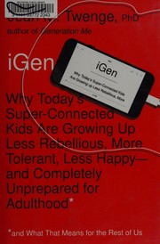

《i 世代》
书·Jean M. Twenge, 2017·iGen: Why Today's Super-Connected Kids Are Growing Up Less Rebellious, More Tolerant, Less Happy—and Completely Unprepared for Adulthood

特温格根据多年的全国调查，描述 1995 年后出生的一代人：更晚恋爱、睡得更少、更孤独，并把变化与智能手机联系起来。中译名未核实，此处中文题名为直译或沿用旧数据。
- 作者
- Jean M. Twenge
- 年份
- 2017
- 难度
- 入门
- 类型
- 概览
- 所属学派
- 屏幕与青少年心理之争
- 核心理论
- 智能手机与青少年心理健康
版本
- 中文版 《i世代報告》 珍．特溫格 / 珍·特温格 · 林哲安 / 程道民 译 · 大家 · 2020 豆瓣 8.3 分（14 人评价） 豆瓣页面 ↗
- 英文版 iGen: Why Today's Super-Connected Kids Are Growing Up Less Rebellious, More Tolerant, Less Happy—and Completely Unprepared for Adulthood Jean M. Twenge · Atria Books, first edition · 2017 Open Library ↗